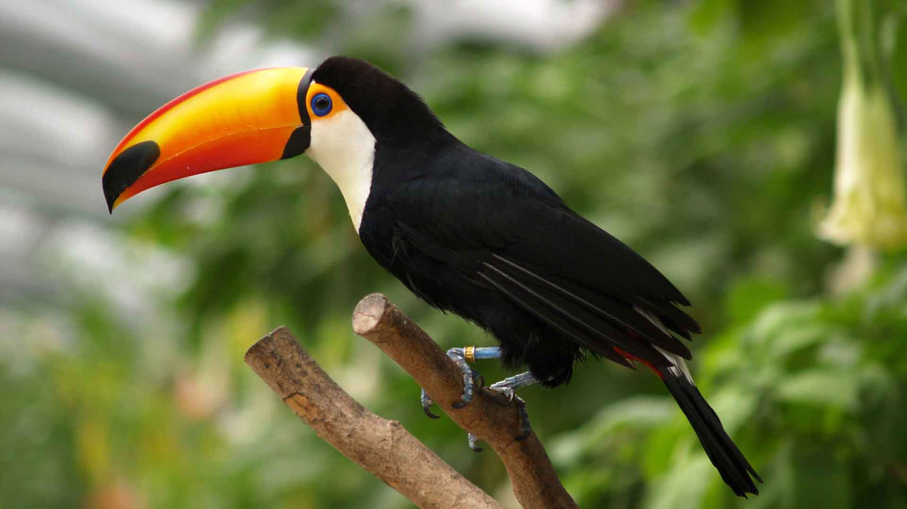
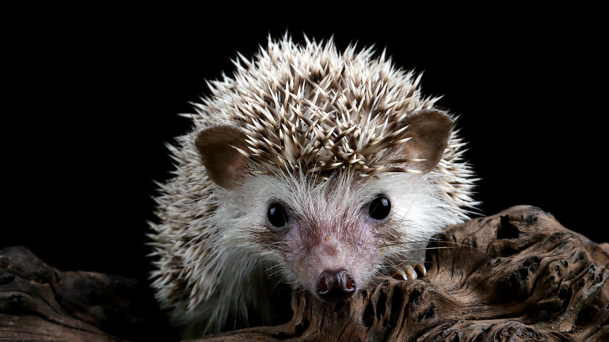

Дата публикации: 02.05.2022 18:00
С такой проблемой мне пришлось столкнуться на днях. Некий молодой человек, в силу своей неосведомленности, захотел, якобы, "спрятать" от глаз прохожих свою цаплю. Но вот беда! Цапля была белой, а не черной! И, естественно, она была заметна всем! - Что же делать - забеспокоилась цапля. - А ты как думаешь - спросил ее воробей. Цапля задумалась и сказала: - Если я стану черной, то меня все будут бояться! Воробей, услышав это, испугался: - Зачем тебе быть черной цаплей, если ты будешь белой! И с этими словами, он подлетел к черной цапле и, ухватив ее за крыло, воскликнул: - Я помогу тебе стать черной цаплей! Черная цапля обрадовалась и, подпрыгнув от радости, воскликнула: - Спасибо тебе! И спасибо тебе, воробей!
Дата публикации: 30.15.2022 28:00
Теперь я могу выходить из дома в любое время суток и возвращаться в любое.
Понедельник-день-бездельник
Вторник-повторник
Cреда-тамада
Четверг-я заботы все отверг
Пятница-пьяница
Суббота-безработа
Воскресенье-день веселья!
Дата публикации: 12.10.2022 08:00
Родились ежата, все были здоровыми. Но в одну из ночей увидели на столе две миски с едой. Одна была полной, другая пустой. Ежата решили, что миска с едой — это мамино тело, поэтому съели всю еду. Родители потом долго извинялись, говоря, что они хотели, чтобы ежихи оставили их детей в живых.